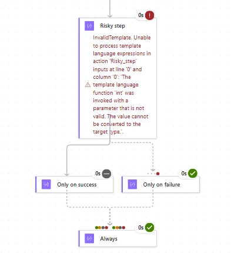
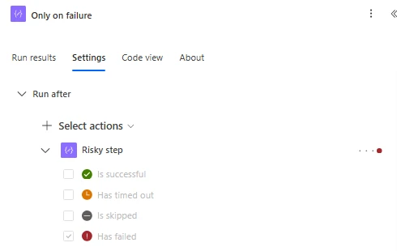

- Power Automate
- Level 4 · Reliable flows · 2 of 7
Configure run after
Every action has a Run after setting. By default it is is successful: run only if the step before it worked. Changing it is how you build failure branches, clean-up steps and the try / catch pattern.
Three branches after one risky step

| Action | Run after setting | Result here |
|---|---|---|
| Only on success | Risky step is successful | Skipped |
| Only on failure | Risky step has failed | Ran |
| Always | Both branches: all four outcomes ticked | Ran |
Where the setting lives

The four outcomes are is successful, has timed out, is skipped and has failed. Tick more than one to run on any of them. On the canvas, a dashed arrow with coloured dots marks a step whose run after is not the default.
Skipped spreads: when a step is skipped, steps that run after it on is successful are skipped too. That's why Always must also tick is skipped, otherwise it would be skipped whenever one of its branches is.
New to this? Start from the basics optional
Succeeded / Failed / Skipped / TimedOut: the four ways an action can finish.
Branch: two actions that both run after the same step form parallel branches; each has its own run after.
Run status: a run where a failure was handled by a failure branch can still end as Succeeded.
Build it step by step optional
- Add a Compose named Risky step with
int('abc')(it always fails). - Add Only on success after it and leave Run after as is.
- Hover the arrow above Only on success, select + > Add a parallel branch, and add Only on failure. In its Settings, set Run after to has failed only.
- Add Always below both branches and set Run after for each branch to all four outcomes.
- Test, then change Risky step to
int('5')and test again to see the branches swap.
Common mistakes
- Forgetting has timed out on failure handlers. Slow services time out rather than fail.
- A failure branch that itself fails with no handler. Keep failure branches simple and safe.
- Setting run after on the wrong step: it refers to the step directly before, not the whole flow.